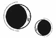

CAPÍTULO 11
Helena sabía que estaba a punto de ser arrastrada a su habitación, pero, en lugar de incorporarse, se giró hacia el sello con la intención de descifrar al menos una parte.
Su vida ya era un misterio incomprensible.
En vez de llevarla a su habitación, Ferron se acercó y se quedó observándola mientras ella trataba de darle sentido a los símbolos que había grabados en el suelo. Cuando no lo consiguió con el primero, pasó al segundo, y luego al siguiente. Tardó un instante en darse cuenta de que todos estaban meticulosamente emborronados para que no se distinguiera cuál había sido su origen.
Parecía que su destino era resolver acertijos sin solución.
Alzó la vista hacia Ferron, resignada.
Este la estaba fulminando con la mirada.
—Es impresionante lo empeñada que estás en ponérmelo difícil —le recriminó.
—¿Esperabas otra cosa? —preguntó Helena encogiéndose de hombros como si nada.
Ferron no respondió, pero su gesto lo enfureció.
Helena lo miró fijamente, con una calma tan profunda que pudo entrever lo que ocultaban sus ojos: un océano de rabia y odio. Esta habitación parecía despertar en él una aversión especial, como si encerrara entre sus paredes algún recuerdo terrible. Si tenía suerte, tal vez le rompiera el cuello en ese instante.
Señaló la jaula con la cabeza.
—¿Metes a mucha gente en jaulas, Ferron?
El Sumo Inquisidor apretó la mandíbula con fuerza. Helena notó cómo le bajaba la nuez al tragar saliva.
—Solo a ti —replicó mirando a su alrededor y señalando el entramado de hierro que era la casa de sus ancestros—. ¿No te has dado cuenta?
Helena hizo un gesto y se puso en pie. Esperaba pillarlo desprevenido, pero él ya se había dado cuenta de la estrategia. Era mejor que se comportara bien si quería que la dejara en paz.
Salió al pasillo principal, confiando en que la necrómata la estaría espiando, tan impasible como siempre. Sin embargo, la mujer estaba al otro lado del pasillo, con los ojos nubosos abiertos de par en par, como si estuviera aterrada. Los labios de la mujer se movían en silencio, pronunciando algo sin apartar la vista de Ferron.
«Kaine», comprendió Helena. La mujer repetía el nombre de Ferron una y otra vez.
Él hizo un ademán con la mano y la necrómata salió corriendo.
Helena observó cómo esta desaparecía y sintió una leve punzada de culpa.
—No le hagas daño —le pidió.
—Está muerta —replicó Ferron con frialdad mientras cerraba la puerta tras ella. Helena oyó cómo se cerraba por dentro y, acto seguido, el hierro de la pared la cubrió con un chirrido. La puerta no volvería a abrirse salvo para quien tuviera resonancia de hierro—. No se le puede hacer daño.
Lo dijo sin más, pero Helena sospechaba que no le resultaba tan indiferente como quería aparentar.
Helena se dispuso a atacar.
—¿Por qué los mantienes?
Ferron se encogió de hombros.
—Actualmente es difícil encontrar personal decente, así que es mejor mantenerlos cuando los encuentras.
Helena entrecerró los ojos.
—¿Desde cuándo los tienes?
La boca de Ferron se abrió en una sonrisa maliciosa.
—¿Quieres tener alguno propio? Creo que la nigromancia no es lo tuyo.
Helena levantó la barbilla y lo miró con altanería.
—Estás evitando la pregunta.
Le brillaron los ojos, pero negó con la cabeza.
—He reanimado a tantos que ya no llevo la cuenta. Bueno, ¿has terminado en esta ala o vas a seguir manteniendo la esperanza de que haya algún arma por ahí que puedas encontrar?
Ella se negó a morder el anzuelo; un truco así no funcionaba cuando estaba medicada. Normalmente era muy directo, así que le resultó curioso verlo así de esquivo.
—Di por hecho que podía entrar en todas las habitaciones que no estuvieran cerradas. Aurelia nunca me dijo que no pudiera moverme, solo que nadie debía verme.
—Bueno —replicó Ferron, que extendió los dedos por la parte baja de la espalda de Helena para alejarla de la puerta tapiada—. Dudo que Aurelia sintiera especial decepción si tuvieses un final desafortunado. Tal vez así provocaría también mi propia muerte, y ella se convertiría en una viuda adinerada, libre para tener sus amoríos sórdidos con más descaro del que ya tiene.
Helena lo observó con curiosidad mientras caminaban.
—¿No te importa?
Ferron ni le devolvió la mirada.
—Me ordenaron que me casara con ella, y eso hice. Nunca me ordenaron que la quisiera.
Helena frenó en seco.
—Pareces tan esclavo como yo.
Ferron se detuvo y se giró lentamente para mirarla.
—¿Estás intentando provocarme? ¿O que cambie de bando? —Soltó una carcajada cruel—. Qué valiente eres.
—Ya lo habías pensado tú solo —dijo ella, disfrutando de la claridad con la que podía pensar cuando no la abrumaba la necesidad de revisar y vigilar cada sombra, cuando no se sentía ahogada constantemente—. De no ser así, ahora mismo te sentirías ofendido.
Por un instante, Ferron pareció sorprendido de la valentía que el medicamento le había dado, pero luego apartó la vista con desdén.
—Es una pena que te echases a perder.
Helena no estaba segura de si lo estaba entendiendo o no, pero respondió igualmente.
—Luc lo merecía.
—¿Por qué?
La pregunta la pilló más desprevenida que el primer comentario. Negó con la cabeza.
—Hay gente que merece la pena. Solo con mirarlos, ya lo sabes.
—Adoración ciega, entonces —repuso Ferron, y se giró para marcharse.
—No era ciega. Yo lo elegí —dijo Helena.
El Sumo Inquisidor dio un paso hacia atrás y algo en su mirada se tornó serio.
—¿Ah, sí? Refréscame la memoria, ¿qué más decisiones tomaste?
Helena apretó el puño y notó las cicatrices que tenía en la palma con las yemas de los dedos.
—No muchas, la verdad, pero sé de quién fue la culpa.
Ferron empezó a dar vueltas alrededor de ella.
—¿Crees que fueron los gremios los que inventaron la división entre nosotros y la Llama Eterna? Los Holdfast aseguraban que todos sus mandatos eran dictados divinos y consideraban cualquier concesión como una violación a sus consciencias. ¿Dónde dejaba eso los deseos y las necesidades de los demás? ¿Qué podíamos hacer si todo lo que queríamos se convirtió en un pecado, o en alguna forma de vicio, solo porque no les convenía que lo tuviéramos? Lo único que hicimos fue convertirnos en lo que ellos ya se habían convencido de que éramos: innobles y corruptos. —Se detuvo con las manos colocadas a la espalda—. ¿Crees que fue casualidad que detestásemos a los alumnos becados como tú? Si no lo hubiésemos hecho, ¿cómo habrían logrado mantenerte lo suficientemente sola y desesperada como para que se lo agradecieras tanto?
Helena sacudió la cabeza. No era verdad. Los gremios fueron quienes lo iniciaron todo. Luc siempre quiso ver lo mejor en todo el mundo. Para él, las responsabilidades de su familia eran una carga que no tenía más remedio que aceptar por el bien de los demás. Intentó solucionar los problemas que afectaban a la ciudad, pero a los gremios no les pareció bien ninguna de las soluciones.
Ferron era una serpiente que pretendía fingir que estaba en el bando de Helena, como si su moralidad dependiera de quién la tratase mejor.
Lo miró con incredulidad, pero un instante después, cuando la emoción se desvaneció, se le ocurrieron más preguntas. Al fijar sus ojos en él, no pudo evitar cuestionarse de nuevo quién era.
Habría tenido dieciséis años cuando asesinó al principado Apollo. Algo así debería haberle bastado para convertirse en uno de los inmarcesibles, pero Ferron no aparentaba tener dieciséis.
Si obviaba el descoloramiento, tendría el aspecto de alguien de veinte años. Sin embargo, si hubiera ascendido hacía poco, debería reflejar en su rostro todos los años de guerra. Estaba prácticamente intacto, como si la muerte y la destrucción que había causado no le hubieran afectado. Lo único que delataba que había entrado en batalla eran sus ojos: tenían una rabia hueca en su interior, algo que Helena solo había visto en aquellos que llevaban mucho tiempo en el frente.
Como si Ferron tuviera algún motivo para estar enfadado.
Hasta apartada de sus emociones, el odio que Helena sentía por él seguía manteniéndose firme en su mente.
¿Por qué había hecho todo aquello? No parecía disfrutarlo. Muchos de los inmarcesibles que lucharon en la guerra habían sido unos sádicos; Helena lo sabía porque tuvo que sanar a sus víctimas. Pero Ferron parecía inclinarse por la eficiencia letal y, aun así, no parecía sacar placer ni rédito al hacerlo.
Como Sumo Inquisidor, no era más que un arma y, por tanto, carecía del prestigio que sus habilidades podrían haberle otorgado. Era el único cargo anónimo; ningún otro se escondía detrás de un título.
Eso debía de dolerle, especialmente porque el resto de los inmarcesibles dedicaban sus días al libertinaje, mientras que él estaba a la entera disposición del Sumo Nigromante. Obediente como un perro.
¿Qué ganaba con eso? Desde luego, era demasiado inteligente como para carecer de ambición. Debía de tener alguna jugada a largo plazo. Y, si ella conseguía desvelarla, podría obtener una ventaja, una forma de manipularlo.
O, tal vez, era su propia vanidad la que estaba distorsionando su razonamiento. Necesitaba que su captor fuese astuto, porque si no ¿cómo de patética era ella, su prisionera?
Abrió la boca con intención de provocarlo, pero se lo pensó mejor.
Ferron sonrió de lado.
—¿Otra vez analizándome?
Antes de que Helena pudiera responder, resonó por el pasillo el repiqueteo apresurado de unos tacones. Helena se dispuso a desaparecer, pero Aurelia ya había doblado la esquina. La miró con rabia hasta que vio a Ferron.
Frenó en seco, entrecerró los ojos y frunció los labios, lanzándoles una mirada acusadora. Le temblaron los rizos que le enmarcaban la cara.
—¿Ahora socializamos todos juntos? —preguntó en un tono dulce pero a la vez tan venenoso como el arsénico.
—Solo le estaba enseñando la casa —respondió Ferron, y señaló vagamente el largo pasillo, que estaba lleno de cuadros polvorientos y bustos de hombres que debieron de ser importantes en la familia.
Aurelia frunció más los labios, hasta que se volvieron blancos.
—Creía que hoy tenías negocios que atender. Me dijiste que esta tarde estarías ocupado cuando te pedí que te pasaras por la recaudación de fondos. —Ladeó la cabeza y sus rizos perfectos rebotaron como muelles—. Y, sin embargo —pronunció con los dientes apretados—, aquí estás, «enseñándole la casa». Creía que ya no le debíamos nada a la Llama Eterna.
Helena se quedó muy quieta.
Los ojos de Ferron resplandecieron un instante.
—El Sumo Nigromante me dejó muy claro que este asunto tenía prioridad sobre todo lo demás. Esas fueron las órdenes.
Aurelia soltó una carcajada mordaz y rota.
—Pero, si ya has matado a los que quedaban de la Llama Eterna, ¿qué más da ella?
—Yo cumplo con lo que el Sumo Nigromante me ordena —respondió Ferron con la impaciencia de quien ha mantenido esta discusión demasiadas veces—. Si quisiera sujetapapeles hechos a mano, también los haría con la misma devoción.
Ya ni siquiera estaba mirando a su mujer. Su vista se perdía más allá de Aurelia, contemplando un espejo en el que se reflejaban Helena y él.
—Ah, y supongo que eso explica por qué pasas tanto tiempo con ella. Y, cuando no, son los necrómatas los que la siguen. —Aurelia resopló—. Como si fuera a desaparecer. —Le lanzó a Helena una mirada asesina—. No tienes por qué fingir que es algo preciado. Le pregunté a Stroud, y me dijo que no era nadie. No van a venir a buscarla, pero, aun así, la acechas como si fuera una posesión.
Ferron rio con crueldad, y se encendió un brillo en sus ojos cuando dejó de mirar el espejo y se centró en Aurelia. Esta dudó un instante, como si la hubiera pillado desprevenida que le prestara atención.
—Creía que no querías ni verla, Aurelia. —La forma en la que decía el nombre de su mujer era inquietantemente íntima.
Aurelia se ruborizó y le subió el color desde el cuello hasta teñirle las mejillas. Ferron se acercó a ella.
—Si sientes que es mi posesión, que me la guardo solo para mí, tal vez debería incluirte más en los planes. Podría cenar con nosotros, o tal vez podría trasladarla a nuestra parte de la casa y llevárnosla cuando vayamos a la ciudad. Tal vez deberíamos incluirla en esa foto del solsticio por la que pagaste.
Aurelia cada vez estaba más pálida.
—El mundo ya sabe que es mía —señaló Ferron—, pero, si quieres, puedo recordárselo. No quiero que pienses que te estoy ocultando algo, querida.
Aurelia temblaba como si estuviera a punto de explotar.
—Me da igual lo que hagas con ella, ¡pero quítala de mi vista! —Se giró sobre sus talones y se marchó.
Ferron se quedó mirándola con molestia y, después, volvió la mirada a Helena, frunciendo el ceño.
—Sacas de quicio a mi mujer —dijo.
—Eso parece —respondió Helena sin más—. Si quieres evitarlo, puedes matarme.
Ferron resopló, y su rostro se iluminó con diversión un instante.
—Esas pastillas te hacen demasiado efecto.
—Es como si volviera a respirar —explicó Helena, anhelando sentir esa calma sin depender de ellas—. Como si llevara tanto tiempo ahogándome que se me hubiera olvidado cómo es tragar oxígeno. —Luego torció el gesto—. Aunque los síntomas de abstinencia dejan mucho que desear.
—Bueno, yo no tengo la culpa de eso. —Se giró para seguir caminando—. Además, si no acabaras vomitando en el suelo, podrías cometer el error de pensar que me preocupo por ti.
Helena ladeó la cabeza.
—Sí. Pareces extrañamente preocupado de que cometa ese error.
Ferron se detuvo un instante, para acto seguido girarse con una sonrisa cruel que le tensó el rostro.
—Tus amigos no te debieron de prestar mucha atención si eso te da la impresión de que me preocupo.
Helena se quedó paralizada al oír sus palabras y sintió que el corazón intentaba latir más rápido.
—Claro que sí —replicó al instante—. Claro que se preocupaban por mí.
Ferron ladeó la cabeza.
—¿Quiénes?
Tragó saliva.
—Luc, y Lila, y… —Tenía un nombre en la punta de la lengua, pero su mente pareció virar bruscamente hasta que logró concentrarse—. Y S-soren. El hermano gemelo de Lila. Él… él también era amigo mío.
¿Cómo se había olvidado de Soren? No había tenido mucho tiempo para pensar. Ferron parecía esperar más nombres.
—Ilva Holdfast, la tía abuela de Luc. Fue la que me defendió cuando descubrí mi vivemancia. Y… la enfermera Pace. Era la que gestionaba el hospital.
Ferron parecía seguir esperando, y aquello la irritó tanto que la rabia se abrió paso por un instante.
—Que una vivemante formara parte de la Llama Eterna no era algo que le resultara cómodo a todo el mundo. Sobre todo, porque era… extranjera. Resultaba demasiado incómodo para algunos. Yo no tenía las mismas conexiones que tenían otros. Si hubiera habido problemas, podrían… podrían haberle salpicado a Luc.
Ferron arqueó una ceja.
—Bueno, parece que lo has racionalizado todo muy bien. Enhorabuena. Es evidente que al final mereció la pena.
Le dedicó una sonrisa poco sincera y se alejó.
Helena estuvo a punto de lanzarle un busto de mármol y preguntarle quién se preocupaba por él. Su propio padre quería desheredarlo, su mujer no lo soportaba y ni siquiera era capaz de tener empleados vivos que mantuvieran la casa en la que vivía.
Si no hubiera estado medicada, lo habría hecho, pero tuvo la suficiente lucidez como para saber que no serviría de nada y, además, se le acababa el tiempo.
Los necrómatas aparecían y desaparecían como fantasmas mientras Helena continuaba con su exploración. Cuando terminó con el ala este, cogió la capa y los guantes, decidida a pasar el tiempo que le quedaba recorriendo los edificios colindantes.
El cielo estaba extrañamente despejado, de un intenso azul invernal. El sol renovado era un disco dorado pálido, demasiado débil para calentar pero agradable a la vista.
El cobertizo del jardín estaba cerrado con llave. El siguiente edificio era una pequeña forja de hierro. También estaba cerrada. No le sorprendió demasiado. Le pasó lo mismo en los almacenes siguientes. Cuando llegó al establo, sintió la mirada de los necrómatas mientras intentaba abrir las enormes puertas correderas, pero también las encontró cerradas. Tiró de ellas unas cuantas veces más con la esperanza de que cedieran.
Siempre le habían gustado los caballos. Le recordaban a los burros de Etras, que metían los hocicos aterciopelados en los bolsillos de la gente en busca de algo para comer.
Los animales no eran muy habituales en las islas de Paladia. La ciudad era tan densa y contaba con tantos niveles que no había sitio para ellos, salvo las mascotas, y en la Academia ni siquiera se permitían. Solo los vehículos y los camiones podían usar las autopistas, por lo que los caballos que había en la ciudad se limitaban a las celebraciones y los desfiles.
Luc tenía el caballo de guerra blanco más precioso de todos. Se llamaba Cobalto y le encantaban las zanahorias, pero detestaba la ciudad, así que Luc siempre lo llevaba de vuelta al campo en cuanto pasaba el desfile del solsticio de verano. Luc le dijo que, si alguna vez iba a su casa de campo, montarían a caballo.
Helena probó con una puerta más pequeña del establo, que había en otro lateral, y se sorprendió cuando se abrió.
Entró y le llegó el dulce aroma de la paja y otro olor que no logró identificar. Aguzó la vista en la oscuridad. Todos los compartimentos estaban vacíos; no había animales que la recibieran entre coces y resoplidos.
Chasqueó la lengua y oyó un susurro al fondo del establo. El sonido de algo muy grande que se estaba levantando.
Volvió a chasquear la lengua y oyó un resoplido profundo, pero no vio nada.
—¿Hola? —saludó vacilante, atreviéndose a dar un paso más.
La puerta que tenía detrás se abrió de par en par y entró una luz brillante.
Creyó que sería Ferron, pero se trataba de los dos necrómatas de la Central, que entraron en el establo.
Un gruñido, más bien un rugido, se abrió paso por la oscuridad. A Helena se le puso el pelo de punta.
Oyó el sonido de una pesada cadena al arrastrarse y otro gruñido, este más furioso que el anterior, y Helena vio lo que había en la penumbra. Una criatura enorme, negra como la noche, que se abalanzaba hacia ellos.
Era un lobo.
No, era más grande que un lobo, incluso más grande que un caballo de guerra. Tan inmenso que parecía ocupar todo el establo.
Grace le había dicho que el Sumo Inquisidor tenía un monstruo, pero Helena no se lo había tomado al pie de la letra.
La criatura era monstruosa. Tenía unos colmillos más largos que sus propios dedos y relucieron bajo la luz. Una ráfaga de viento atravesó el establo. Captó entonces el olor a sangre; al salir de entre las sombras, vislumbró una boca que echaba espumarajos y unas fauces que se abrían y se cerraban.
Oyó el tintineo de una cadena al estirarse por completo. Unas zarpas llenas de garras arañaron el suelo de madera cuando el monstruo quiso abalanzarse de nuevo.
Los necrómatas agarraron a Helena por el pelo y la sacaron a rastras al jardín, donde la dejaron sobre la gravilla.
Helena se puso en pie con el corazón queriendo latir de miedo, pero no era capaz. Estaba conmocionada por lo que había sucedido. Su cautiverio estaba tan controlado que empezaba a rozar el peligro.
No pudo evitar preguntarse si la puerta del establo abierta había sido obra de Aurelia.
La criatura seguía gruñendo y, entonces, emitió un aullido grave y largo, como el gemido del viento.
Helena recobró el aliento y volvió la vista a los necrómatas. Ambos se habían posicionado delante del establo para vigilarla mientras la criatura del interior se calmaba.
Siguió avanzando. El siguiente edificio era pequeño y geométrico. Probó a empujar la puerta, que emitió un chasquido al abrirse hacia dentro. En cuanto vio las cinco paredes del interior, supo lo que era: una capilla.
Entró y dejó que la puerta se cerrase a su espalda. Helena nunca terminó de acostumbrarse a la rigidez de la religión del Norte, pero ahora, al final de todo, sentía algo agridulce al ver un sitio así.
Paladia le había supuesto un choque cultural por muchos motivos. En Etras, los dioses no necesitaban que creyeran en ellos más que las montañas: existían, simplemente. La gente los trataba con respeto y, en ocasiones, hacían pequeñas ofrendas y rezaban para pedir favores, pero en Etras los dioses representaban las distintas facetas de la vida, no su propósito.
En Paladia era diferente. Se decía que los antiguos dioses exigían sangre en sus sacrificios, pero el dios Sol reclamaba algo más: la propia vida, vivir a su servicio. Las creencias norteñas conminaban a dedicar cada instante al sacrificio, para que, a la hora de la muerte, sus almas ascendieran a los cielos. Todo giraba en torno a lo que Sol permitía o prohibía.
Luc lo intentó todo para ganarse el favor que el dios Sol le había otorgado a sus antecesores. Poseía los talentos alquímicos, estaba bendecido por el sol como todos los demás, pero nunca fue el destinatario de los milagros de los que habían disfrutado sus ancestros: aquellos que le permitieron triunfar en batalla y conseguir las riquezas de su mandato.
Luc habría renunciado a todos sus talentos por un solo milagro: cualquier cosa que pusiera fin a la guerra, pero sus plegarias jamás fueron escuchadas y su devoción nunca sería recompensada.
Siempre se culpó por ello.
Si hubiera seguido con vida, habría rezado incluso en ese momento, pero las palabras de los rituales se atascaron en la garganta de Helena.
Cada pared representaba a uno de los cinco dioses de la Quintaesencia. El radiante e inconquistable Sol, dador de vida, estaba en el centro, flanqueado por los demás. El brasero del altar, que debería arder sin descanso con una llama de fuego eterno, estaba frío, y las mechas de amianto, llenas de polvo y secas.
Seguramente, los Ferron habían mandado construir una capilla para celebrar misas y entierros en privado, como solían hacer las clases altas, y, por la cantidad de pináculos que adornaban la casa, parecía que la familia había sido devota en algún momento. A los paladinos les encantaba decorar todo en grupos de cinco, aunque en la práctica solo veneraran y celebraran a Sol y a Lumitia.
A lo largo de las paredes se alineaban decenas de piedras con placas que rezaban nombres y fechas. Al tener un espacio limitado, los paladinos guardaban las cenizas de sus fallecidos durante generaciones, en vez de enterrarlos en cementerios como hacían otros países.
Aunque era evidente que no le dedicaban muchos cuidados, la capilla no estaba abandonada del todo. Una de las placas relucía más que las demás y había sido pulida recientemente. Se encontraba bajo el altar de Luna, la diosa lunar menor.
Enid Ferron. Siempre te querrán. Esposa y madre.
Según las fechas celestiales, había muerto durante la guerra, en 1785, a los tres años del mandato de Luc. Debía de ser la madre de Ferron.
Helena analizó la inscripción y le pareció paradójica. Por mucho que su marido y su hijo hubieran «querido» a Enid Ferron, no había sido suficiente para concederle la inmortalidad de la que ellos disfrutaban.
Pero, claro, los gremios siempre habían seguido una estructura patriarcal.
Irónicamente, las mujeres eran la única razón por la que los gremios consideraban modernos a los Holdfast. Las niñas llevaban décadas estudiando en la Academia. Había profesoras, instructoras y mujeres que formaban parte de la junta escolar. Gracias a la bendición del principado Apollo, Lila Bayard pudo formarse desde niña para ser paladina primera.
Los gremios, por mucho que hablasen de progreso e igualdad y de librarse de las ataduras tradicionales, tenían muy claro quién se merecía realmente esa igualdad y libertad.
La mujer seguía estando mal considerada en el Norte, sobre todo en los entornos de la Fe. Antes de que el principado ejerciera presión al respecto, la Fe creía que la mujer era inferior y, aunque el Gobierno se distanció de esa afirmación, la creencia seguía vigente.
Era algo que se atribuía a la propia naturaleza. Los hombres provenían de Sol, eran activos, cálidos y secos, estaban llenos de vitalidad, la fuente de la semilla de la vida. Las mujeres partían de una forma humana inferior, húmedas y frías, atadas con pasividad al ciclo mensual de Luna, la luna menor. Aunque sus cuerpos eran necesarios como recipientes para dar a luz, su sangre era la fuente de todos los defectos. Tanto la vivemancia como la nigromancia se consideraban una corrupción de la resonancia provocada por un «útero venenoso».
De ahí provenía la obsesión milenaria de la Fe de crear homúnculos, para eliminar así las ataduras defectuosas que la mujer ejercía sobre la humanidad.
Sin embargo, no todas las mujeres estaban condenadas a esa pasividad fría. Para evitar tal destino, una chica podía consagrarse al culto de Lumitia, la diosa de la guerra y la alquimia, que había nacido del corazón de Sol. Las mujeres asociadas a Lumitia eran consideradas poco tradicionales; podían ser alquimistas, cirujanas, paladinas, cualquier cosa.
Pero eso tenía un precio. Si deseaban casarse o tener hijos, debían renunciar a todo eso. Lumitia era una diosa virgen. Las madres y las mujeres casadas no eran bien recibidas en su altar.
Cuando Helena terminó de explorar, se quedó en el jardín, a pesar del frío, observando cómo el sol invernal se ocultaba tras las montañas. Comenzaron a aparecer las estrellas en el cielo nocturno y brillaron brevemente hasta que surgieron las lunas. Primero lo hizo Luna, una medialuna deforme y plateada que se elevó en el horizonte lejano, derramando una luz tenue y provocando un crepúsculo suave.
Después salió Lumitia, una luna en cuarto menguante. Aun así, era el doble de grande que Luna, y tan brillante que dolía mirarla fijamente. Ascendió en el cielo como un sol blanco y todas las estrellas desaparecieron a su paso, hasta que solo quedaron los planetas y algunos astros en el negro abismo del cielo, reluciendo como polvo de diamante.